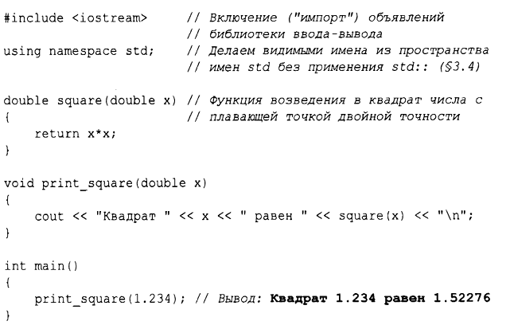

⇐1.2. Программы Содержание 1.3. Функции⇒
Минимальная программа на С++ выглядит следующим образом:
int main() { } // Минимальная программа С++
Здесь определена функция main, не принимающая аргументов и не выполняющая никаких действий.
Фигурные скобки { } группируют выражения в С++. Здесь они указывают начало и конец тела функции. Двойная косая черта / / начинает комментарий, который продолжается до конца строки. Комментарии предназначены для чтения человеком и полностью игнорируются компилятором.
Каждая программа на С++ должна иметь ровно одну глобальную функцию с именем та in ( ) . Программа начинается с выполнения этой функции. Целочисленное значение int, возвращаемое функцией main (),если таковое имеется, является значением, возвращаемым программой "системе". Если значение не возвращается, система получает значение, указывающее на успешное завершение. Ненулевое значение, возвращаемое main (),указывает на сбой. Не каждая операционная система и среда выполнения используют это возвращаемое значение: так поступают среды на основе Linux/Unix, но среды на базе Windows делают это редко.
Как правило, программа производит некоторый вывод. Вот программа, которая выводит на консоль текст Hello, World!:
#include <iostream>
int main ()
{
std::cout « "Hello, World!\n";
}
Строка #include <iostream> указывает компилятору на необходимость включения объявлений стандартных потоковых средств ввода-вывода из файла iostream. Без таких объявлений выражение
std::cout « "Hello, World!\n"
не будет иметь смысла. Оператор « ("вывести") записывает свой второй аргумент в первый. В данном случае строковый литерал "Hello, World! \n" записывается в стандартный поток вывода std:: cout. Строковый литерал представляет собой последовательность символов, окруженную двойными кавычками. В строковом литерале обратная косая черта \, за которой следует еще один символ, обозначает единый "специальный символ". В нашем случае \n является символом новой строки, так что после вывода символов, составляющих текст Hello, World! , выполняется переход на новую строку.
Префикс std:: указывает, что имя cout находится в пространстве имен стандартной библиотеки (§3.4). Как правило, при обсуждении стандартных функций я оставляю std::; в §3.4 показано, как сделать имя видимым без явной квалификации пространства имен.
По сути, весь выполнимый код размещен в функциях и прямо или косвенно вызывается из main(). Например:
